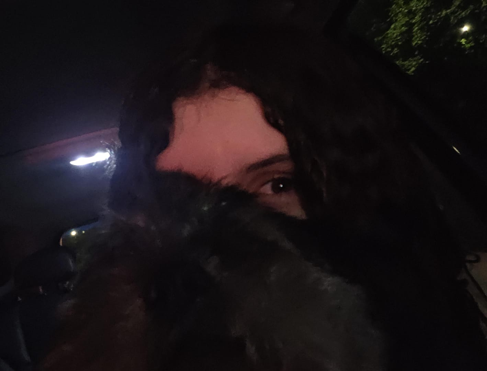
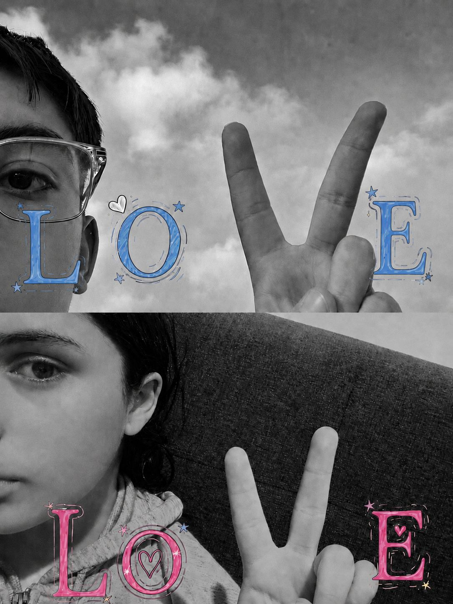
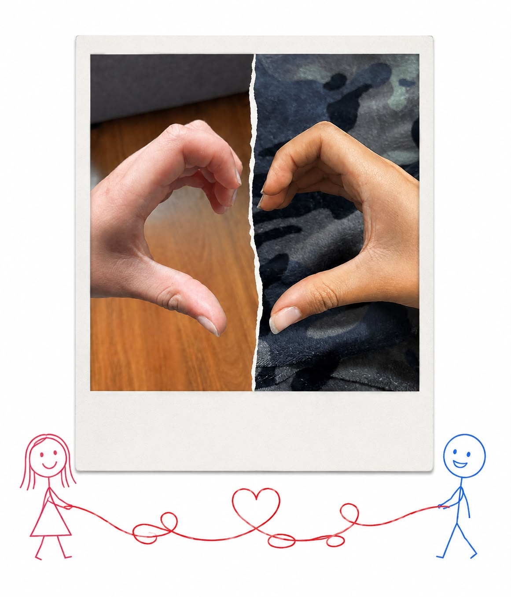
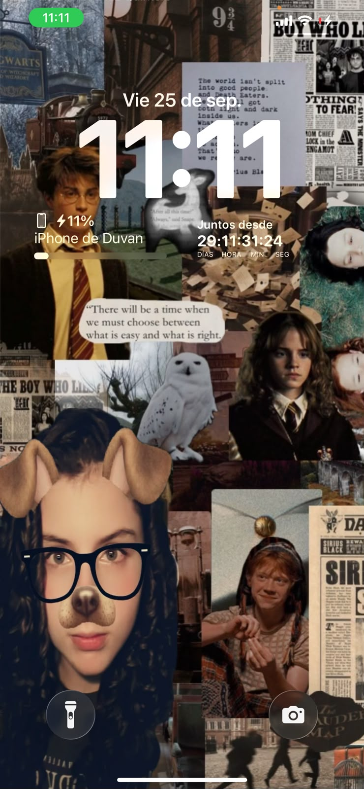
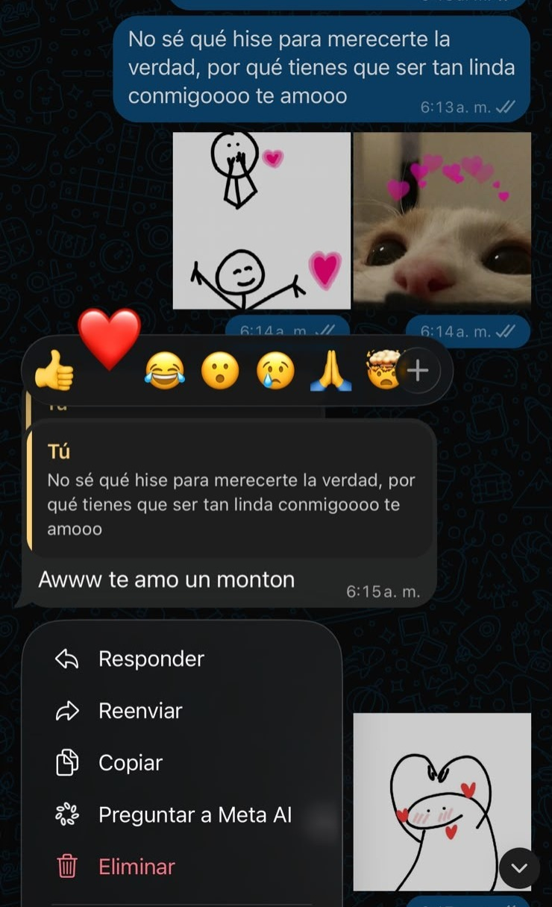
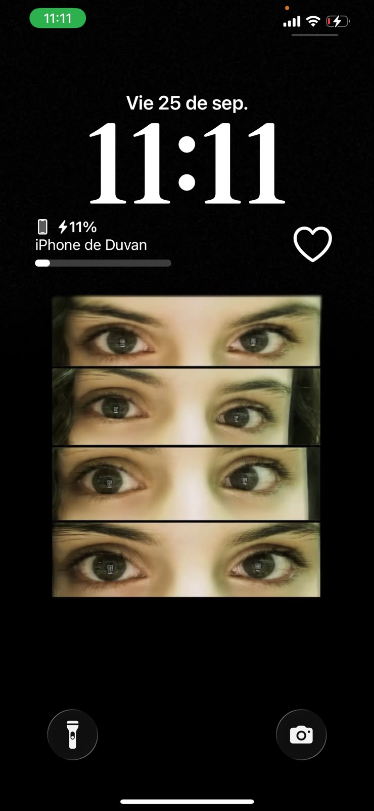

PARA TI
Preparé algo pequeñito para ti...
porque nuestro primer mes merece algo especial.






NUESTRO PRIMER MES
para volver al momento en que comenzó todo.
El momento en que me dijiste que sí.
8:26 a. m.
El momento en que me dijiste que sí.
¿Cómo estás el día de hoy, amorcito?
Amorcito, gracias por acompañarme en este primer mes contigo, el primero de muchos, jsjsjs.
Pensar que hoy hace un mes, casi a esta misma hora, te pedí que fueras mi novia, sin saber todas las cosas bonitas que pasarían en este mes y todas las que todavía nos faltan por vivir.
Este día me ha hecho pensar en que eres la mejor novia que alguien podría desear, porque eres linda, cariñosa, bondadosa, inteligente y tienes tantas cosas bonitas que podría describir de ti que, sinceramente, sería imposible terminar de mencionarlas todas.
Es imposible que alguien se fije en ti y pase desapercibido, porque tienes una forma de ser que simplemente hace que uno quiera quedarse en ti.
Y sigo teniendo envidia, o fomo sjsjsj, por no porderte ver hoy amorcito.
Me da un poquito de tristeza no poder estar hoy contigo, amorcito. Me hubiera encantado poder darte un abrazo, verte y celebrar este primer mes juntos.
Pero espero que el próximo mes sí pueda estar contigo, o el que sigue, y el que sigue.
No importa cuánto tenga que esperar ni cuándo llegue ese momento, porque sé que algún día voy a poder ver esos ojos que me enamoran día a día.
“Lo esencial es invisible a los ojos.”
— El Principito
Y creo que esa frase tiene mucho sentido cuando pienso en ti, porque me enamoré de muchas cosas que no se pueden simplemente mirar.
Me enamoré de tus valores, de tu forma de ser, de cómo me tratas, de tu cariño, de tu manera de hacerme sentir querido y de todas esas pequeñas cosas que hacen que seas tú.
Cosas que quizá no se ven a simple vista, pero que para mí son precisamente las más bonitas.
Y aunque apenas llevemos un mes, me hace feliz pensar en todos los momentos que todavía nos quedan por vivir, en todas las cosas que vamos a conocer juntos y en todas esas pequeñas historias que algún día vamos a recordar.
Gracias por este primer mes, por tu cariño, por tu forma de ser conmigo y simplemente por estar.
Te amo muchísimo, amorcito.
Feliz primer mes de muchísimos.
Esto todavía no termina, amorcito...
Hay un pequeño regalito que todavía no ha llegado a tus manos.
El jueves te espera una pequeña sorpresa.
Espero que te guste, porque lo escogí pensando en ti.
Con mucho amor.
Espero que pronto la foto sea con nosotros en el mismo lugar sjjs.
TE AMO MUCHOOOOOOOOOOO